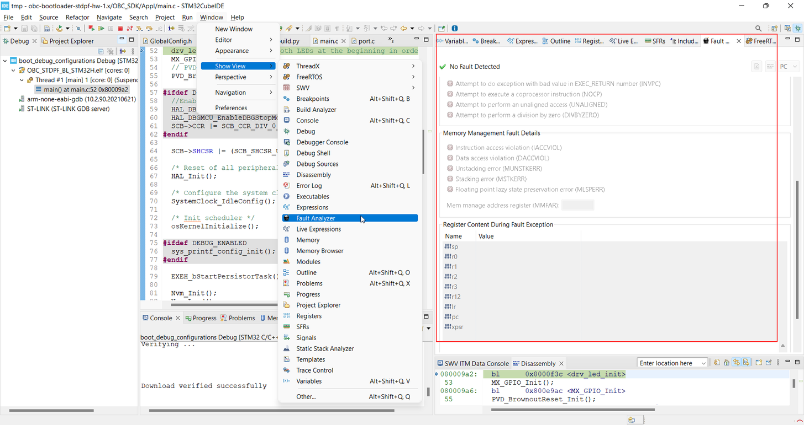

Debug and trace
In the course of using or modifying the OBC SDK, you will definitely need some ways to investigate what happens to the system in order to pinpoint bugs and fix them. While you have the debugger as the main tool for such activity, sometimes program behavior changes if breakpoints are used or HW tracing is performed, and bugs can only be reproduced when the program flow doesn't get interrupted every now and then.
For that purpose, there are some very basic ways of tracing information in the OBC SDK which should be explained here to give you a headstart.
Trace instrumentation for your modules
If you want to introduce configurable serial tracing for your modules, you can perform the following steps:
- include
espf/core/lib/trace/inc/trace.hin your implementation; - use the
ES_TRACE_<LEVEL>(formatString, ...)macros in order to trace information to various outputs.
Info
ES_TRACE_<LEVEL>(...)calls will not have any effect unless theES_TRACE_ENABLEDCMake option is set to ON;-
These debug macros can output formatted data similar to
printf(...), e.g.produces1ES_TRACE_DEBUG("system started successfully!");1system started successfully!And another example...
produces1 2
uint8_t errCode = 5; ES_TRACE_ERROR("system error: [%d]", errCode);1system error: [5]
Tip
In case you want to introduce tracing in your implementation, it may be preferrable to make a wrapper macro over ES_TRACE_<LEVEL>() since the output channel may be only one and you probably don't want to flood it with traces from all components in your system but rather be able to turn on/off certain tracers.
In your public header file, you can define:
1 2 3 4 5 6 7 | |
In your module sources, use only the MODULE_FOO_DBG_PRINT() macro. This way you have the option to disable the traces for this module separately and thus limit the output only to the traces that you are currently interested in.
Severity levels of traces
There are five severity levels defined for trace entries:
- ERROR - any fault which prevents the proper execution of a functionality, but doesn't necessarily affect the system as a whole. Usually not recoverable without user intervention.
- WARNING - any anomaly that may affect the proper execution of a functionality, but is recoverable.
- INFO - any piece of information that is useful to be available all the time.
- FATAL - any error which prevents the whole system from operating correclty (or at all). Recoverable only through reset.
- DEBUG - any details that provide insight into the operation of the system but are not expected to be available all the time. Used mainly during development and defect analysis.
Trace output
Currently there are three types of channels you can use as sinks for the trace output - debugger, UART and file. The default trace configuration has one of each type configured. You can add more trace outputs by modifying the implementation in file espf/config/trace_config/src/trace_config.c.
Debugger
Trace data is output directly to the ARM trace cell output which can be captured in the STM32CubeIDE in the following way:
- Instrument your code with
ES_TRACE_<LEVEL>macro calls. - Make sure that the STM32_SWV_SUPPORT CMake option is set to ON and DEBUG_ENABLED is defined (available by default in debug builds).
- Build your code.
- Open the debug configuration dialog ->
Debuggertab and make sure to select theEnablecheckbox in theSerial Wire Viewer (SWV)group. - Set
Core Clock (MHz):edit box value to108.01 and click theApplybutton. - Start a debugging session with your code by clicking on the
Debugbutton. - When you first hit the default
mainfunction breakpoint, open theWindow->Show View->SWV->SWV ITM Data Consoleview from the Eclipse main menu. - Click on the
Configure traceicon and click on theEnable port:check box0inside theITM Stimulus Portsgroup confirming the choice with theOKbutton. - Click on the
Start Traceicon to arm the recording of trace data in the data console. - Run the program image by pressing F8 key on your keyboard.
{kind=link}
{kind=link}
If everything is setup correctly, you should see the instrumented traces being printed in the Port 0 tab of the SWV ITM Data Console.
{kind=link}
Info
By default, all severity levels are output through the debugger. This can be changed in trace_config.c through the .levels attribute of the fs_channel_list element corresponding to the debugger output.
UART
Trace data is output via an available UART. Default implementation checks three UART channels for availability - UART5 (not available when GNSS is used), UART7 (not available when EPS M is used) and UART8 (not available when CSP or SLIP are enabled). In the rare case when all three UARTs are unavaliable due to specific module usage, you have to rely on the debugger and/or file outputs.
Tip
All trace output going to the UART port can be captured outside of the STM32CubeIDE by using a serial emulator SW such as Putty However, we suggest the use of EnduroSat Trace Decoder for better user experience.
Info
By default, all severity levels are output via UART. This can be changed in trace_config.c through the .levels attribute of the fs_channel_list element corresponding to the UART output.
File
Trace data is output to a rolling file on the SD card. Current implementation works with 10 instances of the rolling file, but this number can be adjusted in espf/config/trace_config/src/trace_config.c. The active instance, i.e. the one that trace is currently working with is named trace_log.doN where N is a number between zero and the maximum number of instances minus 1. The inactive instances are named trace_log.dxN where N is again an index number.
Info
By default, all severity levels except DEBUG and INFO are output to file. This is done to reduce wear of the SD card storage by reducing output only to critical information. This setting can be changed in trace_config.c through the .levels attribute of the fs_channel_list element corresponding to the file output.
Trace Decoder
The EnduroSat Trace Decoder is a tool for presenting the output of UART and file traces in a convenient format with limited filtering capability. What makes it better than serial emulators (for UART) or text editors (for files) are features like:
- Decoding of timestamps set on OBC side for each entry
- Filtering by file and severity level
- CRC16 check on the trace data. Entries with failed CRC check are not displayed.
The Trace Decoder is a Python script that can be found in folder other/scripts/trace_decode/ of the SDK delivery.
You don't need to install it, just run:
1 | |
--help or no options at all.
Exception tracing
For basic exception tracing out-of-the-box, there is a dedicated service implemented in the OBC SDK called exeh. Please refer to its doxygen documentation for details on how to use the service and what it can do for you to help with debugging your software.
CPU exception fault handling
OBC is based on an ARM Cortex-M7 CPU core which provides some useful HW exception handling mechanisms. The OBC SDK ships with drivers and services working together to detect and persist the fault information so that if something happens in the field, there will be a trace in the system and end-users will be able to analyze what actually happened. This chapter gives more insight on what information gets stored by the OBC in case of HW failure and how it can be obtained and interpreted.
Before delving deeper into the storage data format, let's briefly see which modules are involved in the CPU exception fault handling:
classDiagram
direction TB
class fault_persistor { <<Service>> }
class nvm { <<Service>> }
class arm_fault_handler {
<<Driver>>
+void MemManage_Handler()
+void BusFault_Handler()
+void UsageFault_Handler()
+void HardFault_Handler()
}
fault_persistor ..> arm_fault_handler : get fault data
fault_persistor ..> nvm : store fault persistentlyThe fault_persistor module is a high-level service which provides:
- sequential and random access to the last
5captured exceptions - management of the NVM fault storage (in FRAM)
- export of the available exception entries to a binary file for offline analysis2
The arm_fault_handler is a CPU-specific driver module which implements the detection and capture of dedicated CPU register data at the time of the fault. Its whole responsibility is to store the last captured exception to a dedicated no-init region in RAM. arm_fault_handler implements the ARM exception handlers called by the CPU in case of exception (interrupting any other activity at this time).
Information collected by arm_fault_handler
The ARMv7-M Architecture Reference Manual provides very detailed information on how the CPU handles exceptions in general and which registers can be inspected when an exception occurs. Here the registers will only be briefly listed for general reference:
| Register name | Size (bytes) | Description |
|---|---|---|
CFSR |
4 | Configurable Fault Status Register 32-bit register which contains a summary of the faults leading to the HW exception Comprises the following registers: UFSR (Usage Fault Status Register)BFSR (BusFault Status Register)MMFSR (MemManage Status Register) |
ABFSR |
4 | Auxiliary Bus Fault Status Register It gives an indication of the memory bus on which a fault occurred |
HFSR |
4 | HardFault Status Register |
MMFAR |
4 | MemManage Fault Address Register Provides the address of the memory location that caused an MPU fault (in case MPU is used) |
BFAR |
4 | BusFault Address Register |
arm_fault_handler also captures the active SP (Stack Pointer) at the time of the fault.
Exception stack frame format
According to the ARMv7-M Architecture Reference Manual there are two exception stack frame types based on the availability of the CPU FP extension:
-
Basic stack frame (8 words / 32 bytes)
R0R1R2R3R12PC(Program Counter)LR(Link Register) (the address to which execution returns after the CPU has handled the exception)xPSR
-
Extended stack frame (26 words / 104 bytes)
- Includes a basic stack frame (see above)…
S0..S15(FP extension registers - 16 32-bit registers)FPSCR(Floating Point Status and Control Register)
There are two stack types supported by the CPU - main stack MSP and process stack PSP (determined by bit 2 of the LR at the time of the exception). If the bit is set, PSP was active prior to the exception entry, else - the MSP was active.
Persistent fault storage
When a HW exception occurs, any complicated processing such as writing to files or external memory should be avoided because those operations may be unreliable in an exception context. While some exceptions may be recoverable, it is most recommended that the CPU is reset if any exception occurs to avoid potential side effects caused by incorrect attempts to recover from the exception. Therefore the exception stack frame is temporarily stored in a RAM memory region which is not initialized during reset so that it can be processed as soon as the application restarts and detects the HW exception. The RAM region which holds information on the last active exception is protected via a 32-bit CRC to ensure that correct data will be persisted eventually.
Storage format
Apart from the register values described in the previous sections, the persisted fault data includes also other fields which represent the frame context and come from the OBC environment (i.e. they are not handled by the HW automatically but by the accompanying stack frame capture routine). For a detailed list of all items included in the persisted exception frame, you should refer to the arm_fault_handler.h::persisted_ram_x_frame_t type.
How to retrieve the fault data from OBC?
Persisted fault data can be retrieved from the system for offline inspection.
There are several ways to do this3:
- collect all stored fault records in one shot via a CP command
espf/core/fidl/obc/cp/cp_fault_ops.fidl
- get (and manage) individual fault records via FP commands
espf/core/fidl/obc/fp/fault_ops.fidl
- download the fault dump file2 from the OBC SD card
How to interpret the captured fault data?
If you just want to inspect a single fault, you can directly use the fault_ops.fidl::read_fault_by_index method3.
The best way to get information for all the faults is to use the provided Python script for obtaining a high-level interpretation of the data using the fault dump file2 stored on the OBC SD card.
Download the file and run espf/core/services/fault_persistor/scripts/parse_faults.py as shown below:
1 | |
Tip
Now we will look into the most useful information stored in such a fault record. Here is an example result from the operation above:
1 2 3 4 5 6 7 8 9 10 11 12 13 14 15 16 17 18 19 20 21 22 23 24 25 26 27 28 29 30 31 32 | |
From this excerpt, you can see that the frame crc at the end is OK which means this is a valid fault record. Now to pinpoint the location where the fault most probably occurred, check the following values:
PC(Program Counter) - gives you the address of the executed instruction when the fault occurredLR(Link Register) - gives you the address of the instruction to which the CPU will return after servicing the fault exception
In the OBC case, these are FLASH addresses which can be checked in the generated lst file by the linker. You can find this file in the <OBC build folder>/<build configuration name> (e.g. build/noboot_debug). By searching those addresses in the lst file you can pinpoint the fault location but you must be certain that the fault was generated by the same SW build which matches the produced lst file.
Another way to check those addresses is to load the SW image via STM32CubeIDE and connect an ST-Link debugger. Run the SW and pause the execution or just put a breakpoint at the main() function to stop immediately after running. Open the Disassembly view and enter the PC- or LR-reported address in the address box shown on the image below:
{kind=link}
The information captured by the fault mechanism is actually the same as given in the STM32CubeIDE Fault Analyzer view:

{kind=link}
So you can also use that view to read a high-level description of the individual bits for the captured registers. The names are exactly the same as reported by the Python script referred here.
How to test the fault persistence mechanism?
Since, it is difficult to test HW exceptions which should usually not happen in your system, an injection fault command is provded in espf/core/fidl/obc/fp/fault_ops.fidl called simulate_fault. You can use it to trigger several common HW exceptions and see how the system would react.
Can I use the fault persistence mechanism to handle pure SW faults?
Yes, indeed. This is supported via the arm_fault_handler::arm_fault_handler_generic() method. The generic handling can store a binary buffer of arbitrary content in place of the HW register capture data. The length of this buffer must match the regular HW frame length (you should refer to the arm_fault_handler.h::persisted_ram_generic_frame_t type for details). This would usually be a string describing the exception but it could also be any other relevant context data.
Here is an example on how this can be used to capture stack overflow errors which are detected by the RTOS via a configurable vApplicationStackOverflowHook callback function:
1 2 3 4 5 6 7 8 9 10 11 12 13 14 15 16 | |
1 2 3 4 5 6 7 8 9 10 11 12 13 14 15 16 17 | |
 The script will not interpret the data stored in this frame.
The script will not interpret the data stored in this frame.
Fault behavior during an active debug session
If a debugger is connected to the OBC MCU at the time of the exception, you will end up in a breakpoint instruction in the fault handler. This is the standard behavior so that you can inspect the fault directly via the debugger if you need to.
If the debugger is disconnected, the system will store the fault and perform an OBC reset.
-
This setting depends on the MCU clock configuration. The value used here matches the current settings applied in the OBC SDK package. ↩
-
All available exceptions in the fault storage get persisted to a file once the OBC starts. The file name is hard-coded to
/sd/fault.dmp. ↩↩↩ -
Communication to OBC is facilitated by the
SpacePYpackage. ↩↩